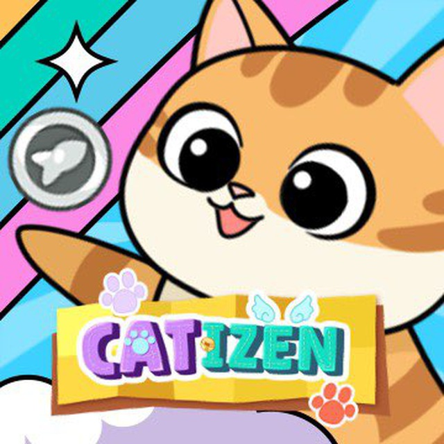

Список криптотапалок
- 
Криптотапалки — это игры, в которых основной игровой процесс заключается в
многократном нажатии на экран для выполнения определённых действий. Они часто
используются для привлечения новых пользователей и получения бонусов за участие.
Криптотапалки дают возможность зарабатывать криптовалюту, выполняя простые
действия, например, нажимая на кнопку или тапая на хомяка.
Первым таким приложением стал Notcoin, созданный командой Telegram. Суть этого
бот-приложения заключалась в том, что пользователи могли фармить токен NOT, просто
нажимая на кнопку на экране. После листинга монеты, люди могли заработать 100, 200, а
то и тысячи долларов, просто кликая по экрану телефона!